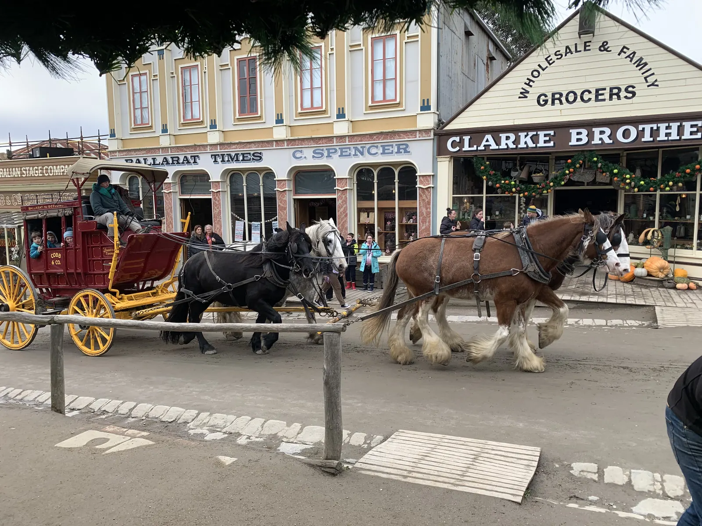

Ballarat · Winter
A Winter Day at Sovereign Hill
Clydesdales, a Victorian theatre, gold panning, the underground mine and Christmas-in-July snow on Main Street.
Read the day out →Some of the best days aren't planned around a workout or a meal plan. They're spent somewhere new, with people you love, walking a lot and talking even more. This is where I share those days: real outings around Melbourne and Victoria, with my own photos, honest thoughts and practical tips if you want to go too.

Clydesdales, a Victorian theatre, gold panning, the underground mine and Christmas-in-July snow on Main Street.
Read the day out →Opening day with my son: supercars, Fast & Furious cars, classic Rolls-Royces and custom builds.
Read the day out →It might seem odd to put car shows and gold-rush towns next to meal ideas and morning routines. But a grounded life isn't only built in the quiet routines of home. It's also built in shared experiences: the conversations in the car, the jokes on the way, and the photos you look back on years later.